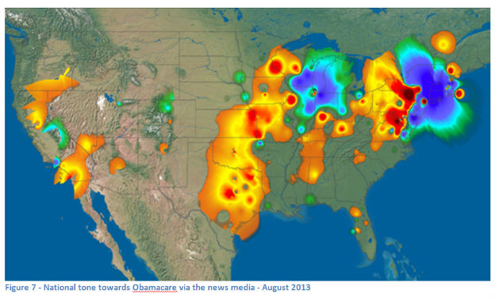

Visualization credit GDELT Project.
Solutions for a Global World
See some of the many ways GDELT can help you understand our complex and ever-changing world.
GDELT is the largest, most comprehensive, and highest resolution open database of human society ever created. Its vast archives of more than a quarter billion georeferenced records covering the entire world over 30 years, coupled with massive networks that connect all of the people, organizations, locations, themes, and emotions underlying those events, offers unprecedented opportunities to understand and interact with our world in fundamentally new ways.
GDELT's unique global reach, realtime update schedule, and ability to capture both physical events and their latent underpinnings makes it possible to literally "watch the world unfold" for high-resolution global situational awareness.
Perform rapid triaging and assessment of the most important "influencers" in an industry, topic, organization, or geographic region.
Risk Assessment & Global Trends
GDELT's massive high-resolution coverage offers unprecedented visibility into global trends and emerging social, political and economic risks.
View emerging reaction to policy in near-realtime to enable realtime course correction and messaging or "test drive" new policies and proposed intervention strategies by examining the impact of previous similar policies across the entire world over the last 30 years.
Humanitarian / Crisis Response
GDELT codifies the world's collective information deluge into a single unified targeted data stream reporting all available information about a given crisis, fully georeferenced and placed into a global context, ready to instantly visualize, map, model, and forecast.
Visualization credit GDELT Project.
Situational Awareness
GDELT's unique global reach, realtime update schedule,
and ability to capture both physical events and their latent underpinnings
makes it possible to literally "watch the world unfold" for high-resolution global situational awareness.

Planet Earth is a complex chaotic cacophony of conflict and cooperation, a global network of interdependent activities and entities that connect our globe. A cartoon published in a newspaper in one country can roil the world with protests in 60 countries, while a fruit vendor setting himself on fire can sweep revolution across an entire region and plunge multiple nations into civil war.
How does one make sense of all of this information and synthesize stability and insight out of it all? GDELT's unique global reach, realtime update schedule, and ability to penetrate the entire world makes it possible to literally "watch the world unfold." The forthcoming GDELT Live service will offer a near-realtime map of everything happening in the world moment-by-moment.
Visualization credit GDELT Project.
Influencer Networks
Perform rapid triaging and assessment of the most important "influencers"
in an industry, topic, organization, or geographic region.
Imagine being able to rapidly assemble lists of the most important "influencers" of a geographic region, industry, topic, or combination therein. The GDELT Analysis Service's Global Knowledge Graph Network Visualizer offers a first glimpse at this, allowing you to specify an arbitrarily complex filter criteria and receive back an interactive browser-based network visualization created by Gephi along with a set of centrality calculations for each node.
Two Foreign Policy magazine columns have used early versions of this network visualization system to explore King Snowden and the Fall of Wikileaks and The Tehran Connection.
A forthcoming new service, under development as you read this, uses a powerful new array of algorithms working together in concert to generate an influencer spreadsheet that closely approximates the rough cut that a human analyst might produce.
Visualization credit Global Twitter Heartbeat (Kalev Leetaru).
Risk Assessment & Global Trends
GDELT's massive high-resolution coverage offers unprecedented visibility
into global trends and emerging social, political and economic risks.
GDELT's massive database covering more than 30 years across every country in the world offers unprecedented resolution and coverage of global patterns and trends. For the report above, discussed in Foreign Policy magazine, the entire GDELT Event Database of 675 million references to the more than 69 million events captured by GDELT for 2012-2013 were scanned for global patterns in Material Conflict in 2013 compared with 2012, resulting in the largest event-based annual country ranking ever created. A 172-page report was compiled with a one-page country brief for every country, providing a series of maps, charts, graphs, and other visualizations identifying the major emerging patterns of unrest across the world in 2013.
A series of forthcoming announcements will unveil an array of new services and tools to help you make sense of an ever-changing world, identifying emerging patterns from the day-to-day noise of a chaotic global society. In 2013 the United States Agency for International Development (USAID) and Humanity United Model Challenge used GDELT for the final round of the Tech Challenge for Atrocity Prevention that "asked innovative problem solvers to create algorithmic models that can help forecast when and where mass atrocities are likely to occur." Nearly 100 contributors submitted 618 algorithms to the competition, with the winning submission being "especially successful at predicting atrocities in regions with limited or no past history of mass violence, taking into account 23 diverse geographic, socio-political and historical violence factors within each region."
Subscribe to the free daily GDELT Daily Trend Report and GDELT World Leaders Index to receive a summary of the major global trends and emerging stories over the last 48 hours, delivered to your inbox each morning.
Visualization credit GDELT Project.
Policy Reaction
View emerging reaction to policy in near-realtime to enable realtime course correction
and messaging or "test drive" new policies and proposed intervention strategies by examining
the impact of previous similar policies across the entire world over the last 30 years.
A powerful emerging application of GDELT lies in its ability to summarize and synthesize emerging global reaction to unfolding events or new policies. This offers the tantalizing ability to actually "course correct" foreign policy in near-realtime to carefully shape its boundaries to address emerging concerns and new exigencies or to correct misconceptions or malicious messaging by adversarial groups such as repressive regimes suppressing anti-government rhetoric. GDELT's ability to measure the underlying latent narrative of the global public sphere, from the thematic underpinnings of discourse to the emotional resonance they invoke, offers a unprecedentedly powerful tool to examine how the world is internalizing and contextualizing global events. Identifying influencers makes it possible to interact more directly with those who have the greatest influence over domestic discourse and policy within each nation of the world, allowing engagement and two-way conversation directly with the world's citizens.
|  | |
World Reaction Towards Putin
GDELT's enormous geographic and temporal resolution makes it possible for the first time to "test drive" new policies by examining the impact of previous similar policies across the entire world over the last 30 years. For example, when contemplating a new natural resources governance strategy in a given region, one can evaluate the impact on domestic unrest in similar countries after similar interventions anytime over the past 30 years. This kind of "sequence analysis" makes it possible to understand the "impact" of global policy on the ground, moving beyond casual anecdotes towards actual quantitative measures.
Visualization credit GDELT Project.
Humanitarian & Crisis Response
GDELT codifies the world's collective information deluge into a single unified targeted
data stream reporting all available information about a given crisis, fully georeferenced and
placed into a global context, ready to instantly visualize, map, model, and forecast.
Effective rapid response to emerging crises requires near-realtime information and the ability to create holistic understandings of what's happening on the ground. GDELT offers crucial capability to essentially harness the world's news media into a single codified information stream that brings together every piece of information that is being reported about a given crisis into a single unified data format, fully georeferenced and placed into global context, and the ability to instantly visualize, model, and explore that data.
A number of forthcoming features will allow you to create realtime embeddable maps of emerging crises or humanitarian situations that draw together the entire quarter-billion-record GDELT Event Database and the GDELT Global Knowledge Graph to provide near-realtime updates backed against 30 years of historical trends.
Get in Touch
We'd love to talk with you about how you can leverage GDELT for your application needs, so drop us an email today!
Contact Us